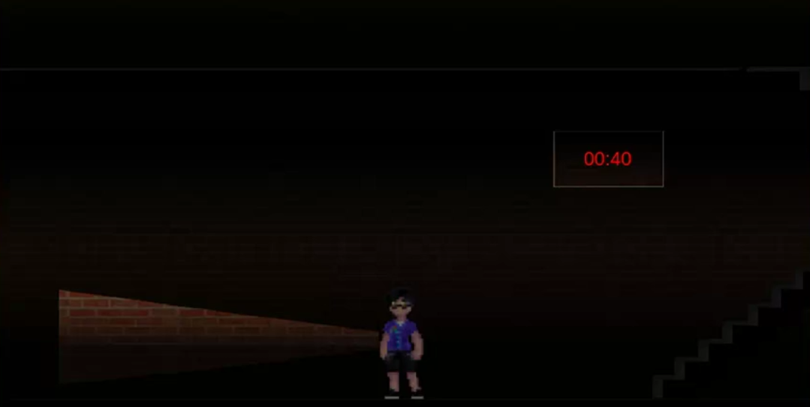

Jogo: bloco maldito
Através do jogo, fomos comtemplados com os primeiros conceitos
de Ciência da Computação, desenvolvemos um jogo de terror, ambientado na TECPUC.
Detalhes Técnicos:
O jogo foi desenvolvido pela ferramenta Construct. Através disso
vimos pela primeira vez conceitos de iluminação, sonoridade, programação de loops e máquinas
de estado finito.
[VOLTAR]